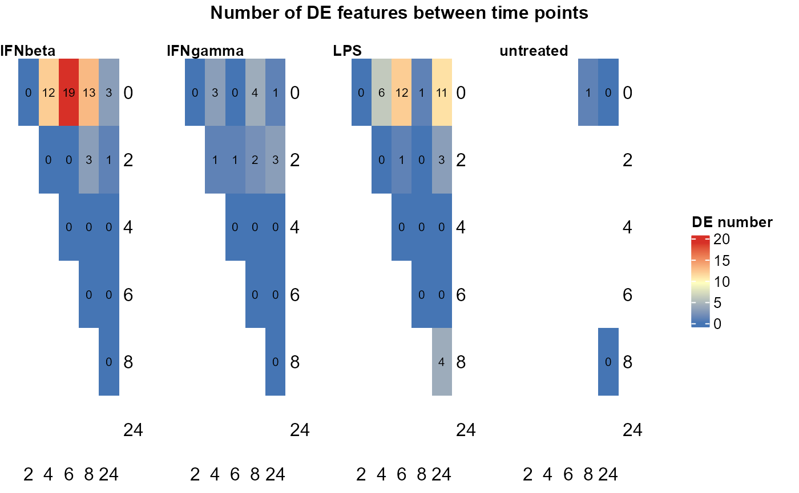

Plot the number of differentially expressed features between time points within each group with heatmaps
Usage
plot_DE_between_time(
se_obj,
de_list,
value = TRUE,
fontsize = 8,
nrow = 1,
heatmap_width = 4,
heatmap_unit = "cm"
)Arguments
- se_obj
A SummarizedExperiment object containing the data and metadata, with a "Time" column in the colData indicating the time points of the samples
- de_list
Output of
DE_between_time(), a nested list of DE results for each group and time point comparison- value
Whether to display the actual number of DE features in each heatmap cell (default is TRUE)
- fontsize
Font size for the heatmap displaying the number of DE features between time points (default is 8)
- nrow
Number of rows for arranging the heatmaps (default is 1)
- heatmap_width
Width of each heatmap (default is 4)
- heatmap_unit
Unit for the heatmap width (default is "cm")
Value
One heatmap per group showing the number of DE features between time points for each group, with the same scale across groups for easy comparison. The heatmap cells are annotated with the actual number of DE features.
Examples
data("example")
example_obj <- normalise_to_start(example_obj)
DE_between_time_out <- DE_between_time(example_obj, assay = 1)
#> Non-NA replicate number filter not specified. Using minimum number of replicates across all groups and time points: 0
#> Comparing group IFNbeta time 2 to 0: keeping 100 of 100 features (100.0%)
#> Warning: Zero sample variances detected, have been offset away from zero
#> Comparing group IFNbeta time 4 to 0: keeping 100 of 100 features (100.0%)
#> Warning: Zero sample variances detected, have been offset away from zero
#> Comparing group IFNbeta time 6 to 0: keeping 100 of 100 features (100.0%)
#> Warning: Zero sample variances detected, have been offset away from zero
#> Comparing group IFNbeta time 8 to 0: keeping 100 of 100 features (100.0%)
#> Warning: Zero sample variances detected, have been offset away from zero
#> Comparing group IFNbeta time 24 to 0: keeping 100 of 100 features (100.0%)
#> Warning: Zero sample variances detected, have been offset away from zero
#> Comparing group IFNbeta time 4 to 2: keeping 100 of 100 features (100.0%)
#> Warning: Zero sample variances detected, have been offset away from zero
#> Comparing group IFNbeta time 6 to 2: keeping 100 of 100 features (100.0%)
#> Warning: Zero sample variances detected, have been offset away from zero
#> Comparing group IFNbeta time 8 to 2: keeping 100 of 100 features (100.0%)
#> Warning: Zero sample variances detected, have been offset away from zero
#> Comparing group IFNbeta time 24 to 2: keeping 100 of 100 features (100.0%)
#> Warning: Zero sample variances detected, have been offset away from zero
#> Comparing group IFNbeta time 6 to 4: keeping 100 of 100 features (100.0%)
#> Warning: Zero sample variances detected, have been offset away from zero
#> Comparing group IFNbeta time 8 to 4: keeping 100 of 100 features (100.0%)
#> Warning: Zero sample variances detected, have been offset away from zero
#> Comparing group IFNbeta time 24 to 4: keeping 100 of 100 features (100.0%)
#> Warning: Zero sample variances detected, have been offset away from zero
#> Comparing group IFNbeta time 8 to 6: keeping 100 of 100 features (100.0%)
#> Warning: Zero sample variances detected, have been offset away from zero
#> Comparing group IFNbeta time 24 to 6: keeping 100 of 100 features (100.0%)
#> Warning: Zero sample variances detected, have been offset away from zero
#> Comparing group IFNbeta time 24 to 8: keeping 100 of 100 features (100.0%)
#> Warning: Zero sample variances detected, have been offset away from zero
#> Comparing group IFNgamma time 2 to 0: keeping 100 of 100 features (100.0%)
#> Warning: Zero sample variances detected, have been offset away from zero
#> Comparing group IFNgamma time 4 to 0: keeping 100 of 100 features (100.0%)
#> Warning: Zero sample variances detected, have been offset away from zero
#> Comparing group IFNgamma time 6 to 0: keeping 100 of 100 features (100.0%)
#> Warning: Zero sample variances detected, have been offset away from zero
#> Comparing group IFNgamma time 8 to 0: keeping 100 of 100 features (100.0%)
#> Warning: Zero sample variances detected, have been offset away from zero
#> Comparing group IFNgamma time 24 to 0: keeping 100 of 100 features (100.0%)
#> Warning: Zero sample variances detected, have been offset away from zero
#> Comparing group IFNgamma time 4 to 2: keeping 100 of 100 features (100.0%)
#> Warning: Zero sample variances detected, have been offset away from zero
#> Comparing group IFNgamma time 6 to 2: keeping 100 of 100 features (100.0%)
#> Warning: Zero sample variances detected, have been offset away from zero
#> Comparing group IFNgamma time 8 to 2: keeping 100 of 100 features (100.0%)
#> Warning: Zero sample variances detected, have been offset away from zero
#> Comparing group IFNgamma time 24 to 2: keeping 100 of 100 features (100.0%)
#> Warning: Zero sample variances detected, have been offset away from zero
#> Comparing group IFNgamma time 6 to 4: keeping 100 of 100 features (100.0%)
#> Warning: Zero sample variances detected, have been offset away from zero
#> Comparing group IFNgamma time 8 to 4: keeping 100 of 100 features (100.0%)
#> Warning: Zero sample variances detected, have been offset away from zero
#> Comparing group IFNgamma time 24 to 4: keeping 100 of 100 features (100.0%)
#> Warning: Zero sample variances detected, have been offset away from zero
#> Comparing group IFNgamma time 8 to 6: keeping 100 of 100 features (100.0%)
#> Warning: Zero sample variances detected, have been offset away from zero
#> Comparing group IFNgamma time 24 to 6: keeping 100 of 100 features (100.0%)
#> Warning: Zero sample variances detected, have been offset away from zero
#> Comparing group IFNgamma time 24 to 8: keeping 100 of 100 features (100.0%)
#> Warning: Zero sample variances detected, have been offset away from zero
#> Comparing group LPS time 2 to 0: keeping 100 of 100 features (100.0%)
#> Warning: Zero sample variances detected, have been offset away from zero
#> Comparing group LPS time 4 to 0: keeping 100 of 100 features (100.0%)
#> Warning: Zero sample variances detected, have been offset away from zero
#> Comparing group LPS time 6 to 0: keeping 100 of 100 features (100.0%)
#> Warning: Zero sample variances detected, have been offset away from zero
#> Comparing group LPS time 8 to 0: keeping 100 of 100 features (100.0%)
#> Warning: Zero sample variances detected, have been offset away from zero
#> Comparing group LPS time 24 to 0: keeping 100 of 100 features (100.0%)
#> Warning: Zero sample variances detected, have been offset away from zero
#> Comparing group LPS time 4 to 2: keeping 100 of 100 features (100.0%)
#> Warning: Zero sample variances detected, have been offset away from zero
#> Comparing group LPS time 6 to 2: keeping 100 of 100 features (100.0%)
#> Warning: Zero sample variances detected, have been offset away from zero
#> Comparing group LPS time 8 to 2: keeping 100 of 100 features (100.0%)
#> Warning: Zero sample variances detected, have been offset away from zero
#> Comparing group LPS time 24 to 2: keeping 100 of 100 features (100.0%)
#> Warning: Zero sample variances detected, have been offset away from zero
#> Comparing group LPS time 6 to 4: keeping 100 of 100 features (100.0%)
#> Warning: Zero sample variances detected, have been offset away from zero
#> Comparing group LPS time 8 to 4: keeping 100 of 100 features (100.0%)
#> Warning: Zero sample variances detected, have been offset away from zero
#> Comparing group LPS time 24 to 4: keeping 100 of 100 features (100.0%)
#> Warning: Zero sample variances detected, have been offset away from zero
#> Comparing group LPS time 8 to 6: keeping 100 of 100 features (100.0%)
#> Warning: Zero sample variances detected, have been offset away from zero
#> Comparing group LPS time 24 to 6: keeping 100 of 100 features (100.0%)
#> Warning: Zero sample variances detected, have been offset away from zero
#> Comparing group LPS time 24 to 8: keeping 100 of 100 features (100.0%)
#> Warning: Zero sample variances detected, have been offset away from zero
#> Comparing group untreated time 8 to 0: keeping 100 of 100 features (100.0%)
#> Warning: Zero sample variances detected, have been offset away from zero
#> Comparing group untreated time 24 to 0: keeping 100 of 100 features (100.0%)
#> Warning: Zero sample variances detected, have been offset away from zero
#> Comparing group untreated time 24 to 8: keeping 100 of 100 features (100.0%)
#> Warning: Zero sample variances detected, have been offset away from zero
plot_DE_between_time(example_obj,
de_list = DE_between_time_out$de_list,
fontsize = 8, value = TRUE, nrow = 1, heatmap_width = 3)
#> Warning: The input is a data frame-like object, convert it to a matrix.
#> Warning: The input is a data frame-like object, convert it to a matrix.
#> Warning: The input is a data frame-like object, convert it to a matrix.
#> Warning: The input is a data frame-like object, convert it to a matrix.
#> Warning: Note: not all columns in the data frame are numeric. The data frame
#> will be converted into a character matrix.
